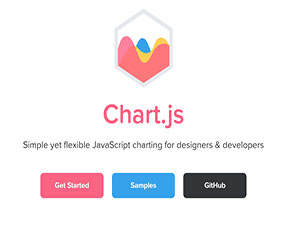
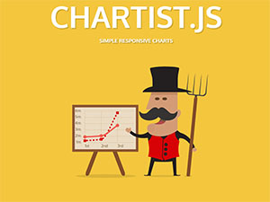
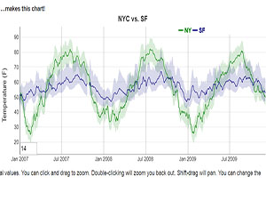

Chart.js

The Chart JS library is an HTML5 based JavaScript library for creating animated, interactive and customizable charts and graphs.
- Dependencies: Moment.js is an optional dependency for Chart.js and Chart.min.js. In order to use the time scale with Moment.js, you need to make sure Moment.js is fully loaded before requiring Chart.js.
- Licence: Chart.js is open source and available under the MIT license.
- Existing projects: Projects
- How long: May 20, 2013. Latest Version: 5 months ago
- Based on: HTML5
- Available. Straight forward and easy to implement.
- Implementation: Easy to implement. Followed the documentation and Could easily make a pie chart. Recommended to use.
- Compare to C3:
- Works on all Devices- Dashboards built using ChartJS widgets work across all popular desktop and mobile browsers.
- Data Visualization- ChartJS provides a comprehensive set of visualization widgets that allow you to visually represent data.
- Trouble-free Configuration- All DevExpress chart and gauge widgets provide straightforward configuration options.
Chartist.js

Chartist gives the functionality of customizing your charts using CSS media queries and creative animations. Chartist uses SVG to render charts.
- Dependencies: No dependencies
- Licence: Open Source
- Existing projects: tablepress_chartist
- How long: October 2007.
Currently still heavily developing
- Based on: SVG, Richer Sass / CSS framework
- Documentation: JSDoc, Getting started documentation and landing page.
- Implementation: Chartist is notably easy to configure, as well as being easy to customize with Sass.
- Compared to C3:
- Simple handling while using convention over configuration
- Great flexibility while using clear separation of concerns (Style with CSS & control with JS)
- Fully responsive and DPI independent
- Responsive configuration with media queries
Dygraphs

Dygraphs is a fast, flexible open source JavaScript charting library. It allows users to explore and interpret dense data sets.
- Dependencies: CSV file
- Licence: Fast, flexible open source JavaScript charting library
- Existing projects:Dygraphs ES6 import demonstration
- How long: Version 2.1.0
2017-12-08
- Based on: Interpret dense data sets.
- Documentation: Available. But not straightforward.
- Implementation: Not implemented.
- Compare to C3:
- Handles huge data sets: dygraphs plots millions of points without getting bogged down.
- Interactive out of the box: zoom, pan and mouseover are on by default.
- Strong support for error bars / confidence intervals.
- Highly customizable: using options and custom callbacks, you can make dygraphs do almost anything.
- Dygraphs is works in all recent browsers. You can even pinch to zoom on mobile/tablet devices!